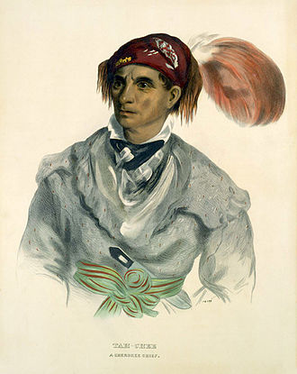
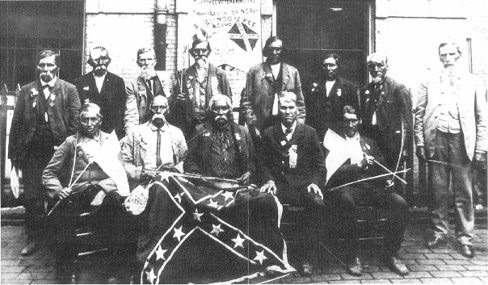

 The Cherokee are a Native American tribe indigenous to the Southeastern United States (principally Georgia, Tennessee, North Carolina and South Carolina). They speak Cherokee, anIroquoian language. In the 19th century, historians and ethnographers recorded their oral tradition that told of the tribe having migrated south in ancient times from the Great Lakes region, where other Iroquoian-speaking peoples were.
By the 19th century, European settlers in the United States called the Cherokee one of the "Five Civilized Tribes", because they had adopted numerous cultural and technological practices of the European American settlers. The Cherokee were one of the first, if not the first, major non-European ethnic group to become U.S. citizens. Article 8 in the 1817 treaty with the Cherokee stated Cherokees may wish to become citizens of the United States. According to the 2010 U.S. Census, the Cherokee Nation has more than 314,000 members, the largest of the 566federally recognized Native American tribes in the United States. In addition, numerous groups claiming Cherokee lineage, some of which are state-recognized, have members who are among those 819,000-plus people claiming Cherokee ancestry on the US census.
Of the three federally recognized Cherokee tribes, the Cherokee Nation and the United Keetoowah Band of Cherokee Indians (UKB) have headquarters in Tahlequah, Oklahoma. The UKB are mostly descendants of "Old Settlers," Cherokee who migrated to Arkansas and Oklahoma about 1817. They are related to the Cherokee who were forcibly relocated there in the 1830s under the Indian Removal Act. The Eastern Band of Cherokee Indians is on the Qualla Boundary in western North Carolina, and are descendants of those who resisted or avoided relocation.[7] In addition, there are numerous Cherokee heritage groups throughout the United states, such as the satellite communities sponsored by the Cherokee Nation.
Many theories—though none proven—abound about the origin of the name "Cherokee". It may have originally been derived from the Choctaw word Cha-la-kee, which means "those who live in the mountains", or Choctaw Chi-luk-ik-bi, meaning "those who live in the cave country."[8] The earliest Spanish rendering of the name "Cherokee," from 1755, is Tchalaquei. Another theory is that "Cherokee" derives from a Lower Creek word, Cvlakke ("chuh-log-gee"). The Iroquois in New York have historically called the Cherokee Oyata’ge'ronoñ ("inhabitants of the cave country").
Tsalagi (???) is sometimes misused as a name for the people; Tsalagi is actually the Cherokee (???) word for the Cherokee language.
There are two main theories of Cherokee origins. One is that the Cherokee, anIroquoian-speaking people, are relative latecomers to Southern Appalachia, who may have migrated in late prehistoric times from northern areas, the traditional territory of the Haudenosaunee nations and other Iroquoian-speaking peoples. Another theory is that the Cherokee had been in the Southeast for thousands of years.
Researchers in the 19th century recorded conversations with elders who recounted an oral tradition of the Cherokee people's migrating south from the Great Lakes region in ancient times. They may have moved south into Muscogee Creek territory and settled at the sites of mounds built by the Mississippian culture. During early research, archeologists[who?] mistakenly attributed several Mississippian culture sites to the Cherokee, including Moundville and Etowah Mounds.
Pre-contact Cherokee are considered to be part of the later Pisgah Phase of Southern Appalachia, which lasted from circa 1000 to 1500.[12] Despite the consensus among most specialists in Southeast archeology and anthropology, some scholars[who?] contend that ancestors of the Cherokee people lived in western North Carolina and eastern Tennessee for a far longer period of time.[13] During the late Archaic and Woodland Period, Indians in the region began to cultivate plants such as marsh elder, lambs quarters, pigweed, sunflowers and some native squash. People created new art forms such as shell gorgets, adopted new technologies, and followed an elaborate cycle of religious ceremonies. During the Mississippian Culture-period (800 to 1500 CE), local women developed a new variety of maize (corn) called eastern flint corn. It closely resembled modern corn and produced larger crops. The successful cultivation of corn surpluses allowed the rise of larger, more complex chiefdoms with several villages and concentrated populations during this period. Corn became celebrated among numerous peoples in religious ceremonies, especially the Green Corn Ceremony.
Much of what is known about pre-18th-century Native American cultures has come from records of Spanish expeditions. The earliest ones of the mid-16th-century encountered people of the Mississippian culture, the ancestors to later tribes in the Southeast such as the Muscogee (Creek) and Catawba. Specifically, in 1540-41, a Spanish expedition led by Hernando de Soto passed through what was later characterized as Cherokee country based on historical encounter by English colonists. De Soto's expedition visited villages in present-day western Georgia and eastern Tennessee, recording them as ruled by the Coosa chiefdom. It is now considered to be an ancestral chiefdom to the Muscogee Creek people. The Spanish recorded a Chalaque nation as living around the Keowee River where North Carolina, South Carolina and Georgia meet.[14] Some of this work was not translated into English and made available to historians until the 20th century, and alternative views had developed related to limited understanding by English colonists of historic Native American cultures in the Southeast. In addition, the dominance of English colonists in the Southeast led to a discounting of Spanish sources for some time.
The American writer John Howard Payne wrote about pre-19th-century Cherokee culture and society. The Payne papers describe the account by Cherokee elders of a traditional two-part societal structure. A "white" organization of elders represented the seven clans. As Payne recounted, this group, which was hereditary and priestly, was responsible for religious activities, such as healing, purification, and prayer. A second group of younger men, the "red" organization, was responsible for warfare. The Cherokee considered warfare a polluting activity, and warriors required purification by the priestly class before participants could reintegrate into normal village life. This hierarchy had disappeared long before the 18th century.
Researchers have debated the reasons for the change. Some historians believe the decline in priestly power originated with a revolt by the Cherokee against the abuses of the priestly class known as the Ani- kutani.[15] Ethnographer James Mooney, who studied the Cherokee in the late 1880s, was the first to trace the decline of the former hierarchy to this revolt. By the time of Mooney, the structure of Cherokee religious practitioners was more informal, based more on individual knowledge and ability than upon heredity.[15]
Another major source of early cultural history comes from materials written in the 19th century by the didanvwisgi (??????), Cherokee medicine men, after Sequoyah's creation of the Cherokee syllabary in the 1820s. Initially only the didanvwisgi adopted and used such materials, which were considered extremely powerful in a spiritual sense.[15] Later, the syllabary and writings were widely adopted by the Cherokee people.
Unlike most other Indians in the American Southeast at the start of the historic era, the Cherokee spoke an Iroquoian language, an indication of migration from another area. Since the Great Lakes region was the core of Iroquoian-language speakers, scholars have theorized that the Cherokee migrated south from that region. This is supported by the Cherokee oral history tradition. According to the scholars' theory, the Tuscarora, another Iroquoian-speaking people who inhabited the Southeast in historic times, and the Cherokee broke off from the major group during its northern migration.
Other historians hold that, judging from linguistic and cultural data, the Tuscarora people migrated South from other Iroquoian-speaking people in the Great Lakes region in ancient times. In the 1700s, the Tuscarora left the Southeast and "returned" to the New York area by 1722 because of harsh warfare in the southern region. The Tuscarora were admitted by the Iroquois as the Sixth Nation of their political confederacy.
Linguistic analysis shows a relatively large difference between Cherokee and the northern Iroquoian languages. Scholars posit a split between the groups in the distant past, perhaps 3500–3800 years ago.[18] Glottochronology studies suggest the split occurred between about 1,500 and 1,800 BCE. The Cherokee have claimed the ancient settlement of Kituwa on the Tuckasegee River, formerly next to and now part of Qualla Boundary (the reserve of the Eastern Band of Cherokee Indians) in North Carolina, as the original Cherokee settlement in the Southeast.